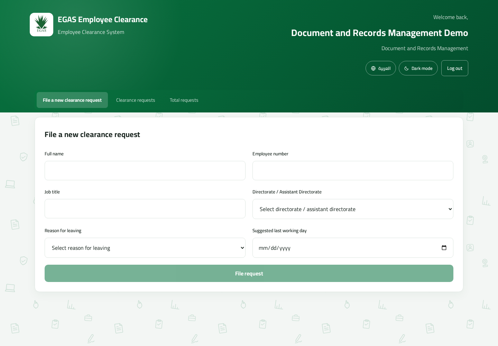
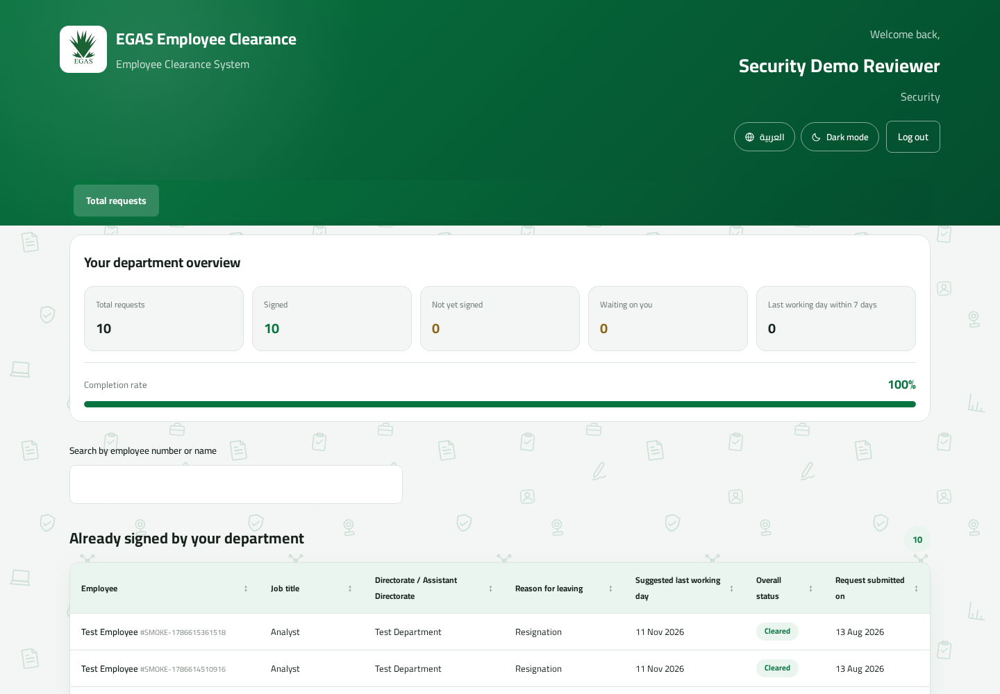
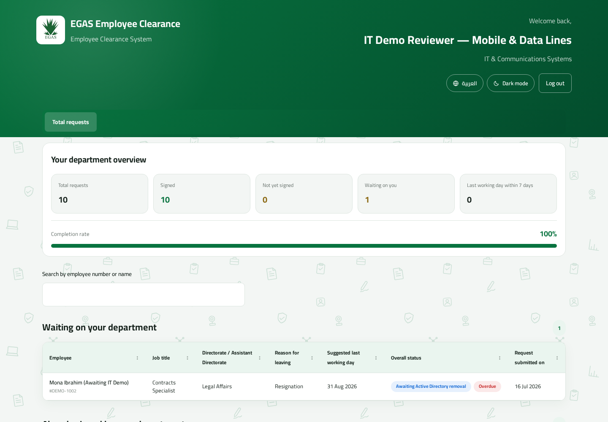

Employee Guide · Version 2.0
Employee Manual
For Document and Records Management, department reviewers, IT, Wages, and Finance.
For Document and Records Management, department reviewers, IT, Wages, and Finance.
This manual is for staff who create, review, sign, approve, and complete clearance requests. Account creation and account administration are documented separately.
| 1. Purpose, roles, and workflow | Everyone |
| 2. Getting started and account security | Everyone |
| 3. Document and Records Management | File Management |
| 4. Department reviewers | Departments 1–11 |
| 5. IT and final access removal | IT |
| 6. Wages and Finance oversight | Tier 2 |
| 7. Troubleshooting and quick reference | Everyone |
The system replaces the manual movement of a paper clearance form. Document and Records Management creates a request; 13 departments review it; Document and Records Management checks the collected evidence; and IT performs the final access-removal action.
| Role | Main responsibility | What they can see |
|---|---|---|
| Document and Records Management | Create requests, monitor progress, inspect evidence, reopen unclear entries, approve, download the final PDF. | All requests and evidence; signer identity is redacted. |
| Department reviewer | Review and sign for one department. | Only their department’s slice of unlocked requests. |
| IT reviewer | Complete one assigned IT checklist item; any IT reviewer can perform final access removal when ready. | IT details plus safe readiness flags. |
| Wages / Finance reviewer | Sign after Tier 1 completes and oversee the full organization-wide status. | All departments, signers, timestamps, evidence, and analytics. |
| Admin | Create, reset, and delete Document/Records and reviewer accounts. | Only accounts they are authorized to manage; no clearance requests. |
| Super Admin | Create, reset, and delete Admin accounts. | Admin accounts only; no clearance requests. |
Departments 1–11 work in parallel. IT is department 10 and requires five separate checklist items. Wages and Entitlements (12) and Financial Affairs (13) unlock together only after every Tier-1 department is complete.

Actual login screen. The demo account picker is a development aid and may not appear in production.
There is no self-service "change password" option. To get a different password, ask your Admin to reset your account — an Admin, not IT, since IT no longer resets or deletes accounts.
An admin-issued reset password (as opposed to the one set at account creation) is temporary. Log in by entering the one-time password provided by the Admin. The website then redirects you to Set new password. Choose a new permanent password of at least 12 characters containing a symbol, confirm it, then sign in normally.
Signing, reopening, approving, deleting, resetting an account, and removing access require your current password again. This proves that the person at the keyboard is still the logged-in user.
Select Forgot your password? or Need help? on the login screen to find an Admin or Super Admin contact. There is no email reset link.
You own the shared operational queue, from request creation through evidence approval and PDF download.

Actual Document and Records Management dashboard.
The actual request form is visible in the dashboard. Required choices are populated by the application configuration.
| Status/readiness | Meaning | Your next action |
|---|---|---|
| In progress | At least one department is pending, or final actions remain. | Open the request to see what is outstanding. |
| Tier 2 locked | One or more departments 1–11 are incomplete. | Wait for Tier 1; Wages/Finance cannot sign yet. |
| Ready for evidence review | All 13 departments are signed. | Preview each evidence file and the composited PDF. |
| Approved; awaiting access removal | Evidence accepted, but IT has not completed the final action. | Coordinate with IT. |
| Completed / cleared | All signatures, evidence approval, and access removal are complete. | Download/archive the PDF as required. |
If evidence is unclear, select the affected department or IT item and use Reopen, then re-enter your password. Reopening clears that signature/evidence and also revokes any earlier File Management approval. The responsible reviewer must sign again with corrected evidence.
When all evidence is satisfactory, choose Approve and confirm with your current password. Approval does not complete the request; IT’s final access-removal action still follows.
The dashboard provides totals and queue visibility; data shown here is from the local demo database.
A reviewer acts only for their assigned department. Standard departments use one signature per request; multiple reviewers in the same department share responsibility, but one valid sign-off completes that department.

Actual Security reviewer dashboard with summary metrics and signed work.
Before the request is finally completed, the responsible reviewer may reopen their own department and sign again. Reopening removes the stored sign-off and evidence. It also invalidates any File Management approval so the replacement is reviewed.
IT is itemized: each of five checklist items is permanently assigned to one IT reviewer account.
| IT item | Typical verification scope |
|---|---|
| Mobile Line & Data Line | Company mobile/data services. |
| Phone | Telephone assets or service. |
| PC, Account & Mailbox | Workstation, system account, and mailbox. |
| SAP Services | SAP-related services. |
| SAP Account Removal | SAP identity removal. |

Actual IT dashboard. The waiting request is ready for the final access-removal action in this demo dataset.
After every department signs and Document and Records Management approves, any IT reviewer can perform the final action. Confirm that the employee’s access has actually been removed, select the final action, and re-enter your password. Only then does the request become completed.
Wages and Entitlements and Financial Affairs unlock together after all Tier-1 work is complete. Both roles can see the full 13-department status, signer details, evidence, timestamps, analytics, and recent activity.

Actual Wages oversight dashboard with organization-wide analytics.
Notes are visible as part of the oversight and review record. Keep them factual and related to clearance; do not include passwords or unnecessary personal information.
| Problem | Likely explanation | What to do |
|---|---|---|
| Cannot sign in | Wrong email/password, temporary-password flow, or deleted account. | Check spelling and Caps Lock; use login-page contacts for the appropriate administrator. |
| Only “Set new password” is available | An administrator reset the account. | Create a compliant permanent password. |
| A request is missing | Role-based visibility, tier lock, search filter, or request already moved to handled work. | Clear search; inspect both waiting and completed sections; verify assignment with Admin. |
| Upload rejected | Unsupported type, missing file, or file exceeds the configured limit. | Use JPG, PNG, or PDF; create a clear smaller scan if necessary. |
| Wages/Finance request locked | At least one Tier-1 department is incomplete. | Use oversight to identify the pending department. |
| Cannot approve | Not all 13 departments are complete or password confirmation failed. | Resolve pending/reopened evidence and retry with current password. |
| Cannot remove access | All signatures or File Management approval not complete. | Review the readiness flags and coordinate with the pending role. |